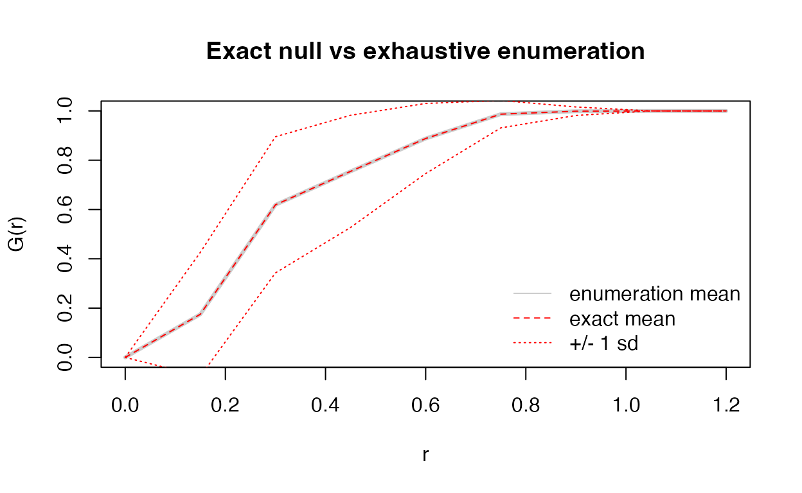

Derivation: exact mean and variance of the univariate nearest-neighbour G function
Source:vignettes/derivation-univariate.Rmd
derivation-univariate.RmdThis vignette proves, without reference to any code, the closed-form mean and variance of the univariate nearest-neighbour G function under the mark-permutation null. The bivariate case is proved in the companion vignette “Derivation: bivariate Gcross”, and the edge corrections are derived as a supplement in “Edge corrections”.
1. The null model and the statistic
Let X = \{x_1, \dots, x_N\} \subset \mathbb{R}^2 be the observed spatial locations. These are held fixed. A mark (for example a positive cell phenotype) is assigned to exactly n of them, and the null hypothesis of complete spatial randomness (CSR) for the marks says that every assignment is equally likely. Equivalently, the marked set
S \sim \mathrm{Uniform}\{\textstyle T \subset X : |T| = n\}
is a uniformly random n-subset of the N locations.
For r \ge 0 write
d(p, A) = \min_{q \in A} \|x_p - x_q\|
for a point p and a set A, and define the sample nearest-neighbour distance of p within S as d(p, S \setminus \{p\}). The univariate G statistic is the empirical distribution function of those distances over the marked set,
G_S(r) \;=\; \frac{1}{n} \sum_{p \in S} \mathbf{1}\!\left\{ d(p, S \setminus \{p\}) \le r \right\}.
Throughout we use the closed convention “\le r”, which is exactly what spatstat.explore::Gest() computes; the difference from a strict inequality is a null set for continuous locations.
2. Indicator decomposition
The key step replaces the average over S by a sum of point indicators. For each location p \in X put
A_p(r) = \{ q \neq p : \|x_p - x_q\| \le r\}, \qquad m_p(r) = |A_p(r)|,
and
X_p \;=\; \mathbf{1}\{ p \in S \} \cdot \mathbf{1}\!\left\{ A_p(r) \cap S \neq \emptyset \right\}.
Then
G_S(r) \;=\; \frac{1}{n} \sum_{p = 1}^{N} X_p.
Indeed, the term for p is one precisely when p belongs to the marked set and some other selected point lies within distance r; dividing by n = |S| turns the count into the proportion of marked points that have a neighbour.
3. The avoidance table
All moments below are built from one combinatorial quantity. For integers B \ge s \ge 0 and 0 \le k \le B, define
T_{B,s}(k) \;=\; \frac{\binom{B-k}{s}}{\binom{B}{s}}, \qquad T_{B,s}(k) := 0 \text{ whenever } B - k < s.
T_{B,s}(k) is the probability that a uniformly drawn s-subset of a set with B elements avoids k prescribed elements. The package precomputes it once per analysis from logarithms of the gamma function, which is why no binomial coefficients are ever formed explicitly.
Lemma 1 (avoidance). Let S be a uniform n-subset of a set X with |X| = N, and let M \subset X with |M| = m. Then
\Pr(S \cap M = \emptyset) \;=\; T_{N,n}(m) \;=\; \frac{\binom{N-m}{n}}{\binom{N}{n}}.
Proof. Choosing S uniformly is equivalent to choosing its complement X \setminus S, a uniform (N-n)-subset, and S \cap M = \emptyset holds exactly when that complement contains all of M. The number of (N-n)-subsets containing a fixed m-set is \binom{N-m}{N-n} = \binom{N-m}{(N-m)-(N-n)} = \binom{N-m}{n}; dividing by \binom{N}{N-n} = \binom{N}{n} gives the claim. Both sides are zero when N - m < n. \square
4. Exact mean
Theorem 1 (mean). With the notation of Section 2,
\mathbb{E}\big[G_S(r)\big] \;=\; \frac{1}{N} \sum_{p=1}^{N} \Big( 1 - T_{N-1,\,n-1}\big(m_p(r)\big) \Big).
Proof. By linearity and the decomposition of Section 2,
\mathbb{E}[G_S(r)] = \frac{1}{n} \sum_{p=1}^{N} \Pr(X_p = 1).
Fix p. Since \Pr(p \in S) = n/N, the multiplication rule gives
\Pr(X_p = 1) = \frac{n}{N}\, \Pr\!\left(A_p(r) \cap S = \emptyset \,\middle|\, p \in S\right).
Conditional on p \in S, the remaining members of S form a uniform (n-1)-subset of the N-1 locations in X \setminus \{p\}, and A_p(r) is a fixed subset of that ground set with m_p elements. Lemma 1 therefore gives
\Pr\!\left(A_p(r) \cap S = \emptyset \,\middle|\, p \in S\right) = T_{N-1,\,n-1}(m_p).
Substituting and using (n/N)\cdot(1/n) = 1/N completes the proof. \square
Two immediate consequences are worth recording.
- The mean is sample-specific: it depends on the observed locations through the neighbour counts m_p(r) alone.
- It never depends on which locations happen to carry the mark, only on n; relabelling the marks leaves \mathbb{E}[G_S(r)] unchanged.
5. Exact second moments
For the variance we need both marginal and joint probabilities.
Lemma 2 (pair inclusion). For distinct locations p, q,
\Pr(p \in S,\; q \in S) = \frac{n(n-1)}{N(N-1)} \;=:\; c_2 .
Proof. There are \binom{N}{n} equally likely marked sets; those containing both p and q number \binom{N-2}{n-2}. The ratio is n(n-1)/[N(N-1)]. \square
Lemma 3 (joint emptiness). Let p \neq q and suppose \|x_p - x_q\| > r, so that q \notin A_p(r) and p \notin A_q(r). Write w_{pq} = |A_p(r) \cap A_q(r)|. Then
\Pr\!\left(A_p \cap S = A_q \cap S = \emptyset \,\middle|\, p, q \in S\right) = T_{N-2,\,n-2}(m_p) + T_{N-2,\,n-2}(m_q) - T_{N-2,\,n-2}\!\left(m_p + m_q - w_{pq}\right).
Proof. Conditional on p, q \in S, the other marked locations form a uniform (n-2)-subset of the remaining N-2 locations. Both A_p(r) and A_q(r) are fixed subsets of that ground set, of sizes m_p and m_q, with intersection of size w_{pq}. The event that S meets neither set is the complement of “meets A_p” or “meets A_q”, and the union has size m_p + m_q - w_{pq}. Applying Lemma 1 to each of the three sets gives the stated expression. \square
Combining Lemmas 2 and 3,
\mathbb{E}[X_p X_q] = \begin{cases} c_2, & \|x_p - x_q\| \le r,\\\\ c_2\Big(1 - T_{N-2,n-2}(m_p) - T_{N-2,n-2}(m_q) + T_{N-2,n-2}(m_p + m_q - w_{pq})\Big), & \|x_p - x_q\| > r. \end{cases}
The first case is immediate: if q itself lies within distance r of p, then selecting both already guarantees that each has a neighbour, so the conditional probability of two hits is one.
Theorem 2 (variance).
\mathrm{Var}\big(G_S(r)\big) \;=\; \frac{1}{n^2} \left[ \sum_{p=1}^{N} e_p (1 - e_p) + 2 \sum_{p < q} \big( f_{pq} - e_p\, e_q \big) \right],
where e_p = \mathbb{E}[X_p] = (n/N)\big(1 - T_{N-1,n-1}(m_p)\big) and f_{pq} = \mathbb{E}[X_p X_q] is given above.
Proof. Expand the square of the sum:
n^2 \,\mathrm{Var}(G_S) = \sum_p \mathrm{Var}(X_p) + 2\sum_{p<q} \big(\mathbb{E}[X_p X_q] - e_p e_q\big),
because the indicators are Bernoulli, so \mathrm{Var}(X_p) = e_p(1-e_p), and covariance is bilinear. \square
The result is exact for every finite sample: no asymptotic approximation, no independence assumption and no simulation are used. The only numerical input is the avoidance table, computed in log space.
6. Computational cost
Computing all m_p(r) costs one pass over the \binom{N}{2} pairs per radius. The double sum has one term per pair as well, but each needs the intersection size w_{pq} = |A_p(r) \cap A_q(r)|. Storing each A_p(r) as a packed bit set of \lceil N/64\rceil machine words and using a population count makes each intersection O(N/64) rather than O(N), so the total work is
O\!\left( R\, N^2 \,\big/\, 64 + R\, N^2 \right)
for R radii. The original implementation instead called a binomial coefficient routine inside the inner loop, which is what made the exact variance prohibitive for large N.
If only a rough scale is needed, setting covariance = FALSE keeps the diagonal term and drops 2\sum (f_{pq} - e_pe_q); this is the “independent points” approximation. It costs O(RN) after the neighbour counts are known.
7. Numerical illustration
The following small example checks Theorem 1 and Theorem 2 against exhaustive enumeration of all \binom{10}{4} = 210 marked sets.
suppressPackageStartupMessages(library(permfreeG))
set.seed(42)
N <- 10; n <- 4
x <- stats::runif(N); y <- stats::runif(N)
radii <- seq(0, 1.2, by = 0.15)
# exhaustive enumeration over all C(N, n) subsets
D <- as.matrix(stats::dist(cbind(x, y)))
ci <- utils::combn(N, n)
Gsim <- matrix(NA_real_, ncol(ci), length(radii))
for (j in seq_len(ncol(ci))) {
S <- ci[, j]
DS <- D[S, S]; diag(DS) <- Inf
Gsim[j, ] <- vapply(radii, function(k) mean(rowSums(DS <= k) > 0), numeric(1))
}
res <- as.data.frame(exact_gest(data.frame(x = x, y = y,
m = factor(c(rep("A", n),
rep("B", N - n)))),
radii = radii, mark_col = "m", marks_i = "A"))
max_mean_err <- max(abs(res$csr_mean - colMeans(Gsim)))
max_var_err <- max(abs(res$csr_var -
apply(Gsim, 2, function(z) mean((z - mean(z))^2))))
c(max_mean_error = max_mean_err, max_variance_error = max_var_err)
#> max_mean_error max_variance_error
#> 5.551115e-16 8.743006e-16Both errors are at the level of floating-point round-off, confirming that Theorems 1 and 2 reproduce the permutation distribution exactly.
plot(radii, colMeans(Gsim), type = "l", lwd = 3, col = "grey80",
xlab = "r", ylab = "G(r)", main = "Exact null vs exhaustive enumeration")
lines(res$r, res$csr_mean, col = "red", lty = 2)
sd <- sqrt(res$csr_var)
lines(res$r, res$csr_mean - sd, col = "red", lty = 3)
lines(res$r, res$csr_mean + sd, col = "red", lty = 3)
legend("bottomright", c("enumeration mean", "exact mean", "+/- 1 sd"),
col = c("grey80", "red", "red"), lty = c(1, 2, 3), bty = "n")